Welcome to CS/IT Community
Greetings from CS/IT Community, the premier online community for those who are enthusiastic about information technology and computer science. At CS/IT Community, we think that creativity, teamwork, and knowledge exchange can propel advancement in the rapidly changing field of technology. You'll feel at home here whether you're an experienced developer, an aspiring coder, or just someone who is enthralled with the limitless potential of digital innovation. Become a part of a varied and welcoming community where you can participate in vibrant conversations, get professional advice, exhibit your work, and learn about the most recent developments and trends in the industry. Come be a part of our thriving community and unlock your potential in the exciting world of CS/IT. Together, we're shaping the future of technology and building a brighter digital tomorrow. On your path to mastery, our website provides you with a plethora of tools, such as articles, tutorials, and interactive learning opportunities. CS/IT offers the resources and assistance you need to be successful, whether your goals are to learn new skills, connect with like-minded people, or improve your abilities. Join our vibrant community and realize your potential in the fascinating field of computer science and information technology. Together, we're reshaping technology and creating a more promising digital future.
What We Offer?
One-on-One Guidance
Personalized, focused, tailored support tailored to individual needs and goals.
Weekly Workshops
.png)
Interactive, informative sessions designed to explore specific topics or skills on a regular basis.
Exam Guidance and Notes
Strategic, comprehensive, targeted support to prepare for exams effectively.
Projects Guidance
Structured, collaborative, goal-oriented assistance in managing and executing projects.
Profile Building

Creating connections through expertise and passion
Technological Environment for the Tech Savvy
Immerse in cutting-edge technologies and innovative tools designed for tech enthusiasts to thrive

Our Vision
Our goal at CS/IT Community is to establish a dynamic and welcoming environment where people of all backgrounds and abilities may come together to share knowledge, work together, and develop new ideas in the fields of information technology and computer science. Regardless of where they live or their financial situation, everyone will have access to high-quality services and education in our ideal future. We want to democratize knowledge and enable people to follow their passions and succeed in the tech sector through our community-driven platform. Our goal is to propel innovation and advancement in the global tech industry by promoting a culture of curiosity, creativity, and ongoing learning. Together, we're creating a community that will influence technology for future generations, not simply software. Accompany us on this thrilling expedition, and together, let's turn our idea into reality—one line of code at a time.